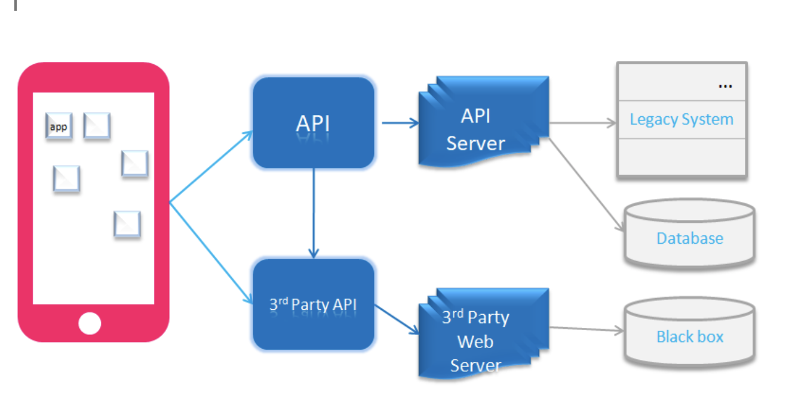

Rethink how you test your API
In the current digital world, with the increased demand for having everything on a click or at one’s fingertips, has forced companies to change the way they interact with or give an experience to users. The user expects real-time data at any given point of time and anywhere!
APIs bridge the gap between app/product and the backend legacy systems (including Mainframe) that most of the time maintain all the data.
Mobile apps also use APIs to get most of the logic and bunch of the data, given their flexibility to use on any mobile platforms.
Some server-side APIs are built by the client itself, and some apps may use 3rd party API such as GoogleMaps or Payment APIs. Some clients build APIs as a wrapper to get the info from Backend. APIs are now the main dependency of your mobile app on how and what you present to the user.

**You release the app, everything works fine.. Until one fine day, you end up seeing a lot of invalid error codes in the logs which you might not expect on a day to day basis during the normal working of the app. **
Some interesting errors that can come up:
- It’s a Leap year this year(2020), User is expecting to see the data for Feb 29th, but the app returns an error message, as API didn’t handle leap year date range. And no-one tested the App for this scenario as it was released in a non-leap year.
- Payment in-app fails for no mistake from the user. It turns out that app doesn’t send the optional fields to the wrapper for e.g. region_code’ or ‘language_code’ which wrapper API marks as optional but which a 3rd party API expects in some scenarios. And the app never got this kind of rare user to verify the scenario in non-prod env.
- Wrapper API changes the collection view.
- You wanted to tweak the 3rd party API that the app is using directly.
- APIs add/remove an extra field in request or response giving a new version of API.
- API changes swagger/RAML for mandatory/optional fields or the length of the fields
- You expect extra details from the backend to decide on a user scenario to display the error screen.
- App’s push notifications give different information than what email (from the website) is being sent to users.
All the above issues result in a bad user experience irrespective of whether the App or the API did wrong. The business and revenue get affected.
Well, neither App nor API did it wrong - The API never got validated!
Data issues for the App:
Sometimes, it gets difficult to get the data for specific scenarios for the App.
Service Virtualization helps validate APIs in a better and faster way for all possible and number of mix ‘n match scenarios.
It’s always better to validate across the available API to test a feature once and to then test various scenarios per API in depth. This will help you quickly validate essential functionality and availability early in the test suite, and then separately validate various scenarios per functional group of API to avoid any basic issues which could have been handled in the earlier stage of the Product by verifying the APIs.
Do you fix all above issues in the app and release it as a hotfix or should you fix the API / wrapper and leave the app itself untouched??
Why have a fixed API rather than a rarely-changing app whenever possible?
- Well, App release in App Stores or Play Store is in itself a big task considering the different platforms, a wide range of devices, fixes, testing & the days it takes to submit, followed by the review and approval process of the app to Go-live for the same.
- Releasing a fix for API is relatively easy and without much of a hindrance compared to the complete Mobile app release.
- Also, we will always have UI/UX and functionality testing for any list/graph, or data displayed as per changes to the API to cover in a mobile app on all platforms and all the screens where that API is called from for all different kinds of users and different handsets.
- It’s thus highly advisable to handle as much logic as possible in server-side APIs instead of the Mobile app. With this approach, the mobile apps would depend on Swagger/RAML definition of API. The mobile App can now pick up the response from API, beautify it and display on the screen. You would want an API system that can handle interfaces to other API systems while maintaining a stable interface for the mobile app (Note: depending upon the situation - e.g. when pulling data from 3rd party, or when the server-side API can’t be changed - app-side API changes can’t be avoided).
Why test APIs :
Just because the User doesn’t directly talk to APIs, it’s not advisable to neglect thoroughly testing APIs by just depending on swagger matching to App.
The App either talks directly to 3rd party APIs or indirectly via app’s own APIs. One’s own APIs can get data from some backend or a 3rd party API in turn as shown in the diagram above.
The API is a piece of the puzzle.
Some may say that we anyways perform end to end Integration tests which cover all components including API. But having so many integration tests will just make your test suite bulky, taking a long time to execute and costly to maintain. It’s always a good practice to test the components separately and thoroughly before you integrate.
You might fix how the data is extracted in API instead of accommodating the logic within the mobile app for the newfound bug whenever possible.
Such a fix would then require thorough testing for the API change and just a regression test (did the functionality work as expected after the API change?) for the App. You can validate the app in Pre-Prod and in the live environment at a given time without having to release an update to the mobile app.
The testing of APIs in the early days can help app progress faster without any API/data issue.
One can thus have quicker feedback.
Well, testing APIs when there is no UI for e.g. sensors, fridge software etc. is altogether a different thing and dealing with that will make you aware how important it is to do API testing.
Dedicated focus on API testing for the app is a win-win for smooth and less minor bug fixes releases for App! Give it a thorough thought!